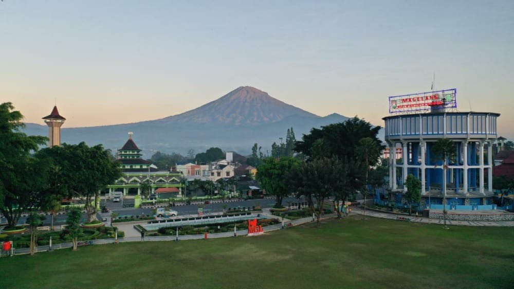

Sejarah
Kota Magelang mengawali sejarahnya sebagai desa perdikan Mantyasih, yang saat ini dikenal dengan Kampung Meteseh di Kelurahan Magelang.
Mantyasih sendiri memiliki arti beriman dalam Cinta Kasih. Di kampung Meteseh saat ini terdapat sebuah lumpang batu yang diyakini sebagai
tempat upacara penetapan Sima atau Perdikan.
Prasasti POH dan Mantyasih ditulis zaman Mataram Hindu saat pemerintahan Raja Rake Watukura Dyah Balitung (898-910 M),
dalam prasasti ini disebut-sebut adanya Desa Mantyasih dan nama Desa Glangglang.Mantyasih inilah yang kemudian berubah
menjadi Meteseh,sedangkan Glangglang berubah menjadi Magelang.
Dalam Prasasti Mantyasih berisi antara lain, penyebutan nama Raja Rake Watukura Dyah Balitung,
serta penyebutan angka 829 Çaka bulan Çaitra tanggal 11 Paro-Gelap Paringkelan Tungle, Pasaran Umanis hari Senais Sçara atau Sabtu,
dengan kata lain Hari Sabtu Legi tanggal 11 April 907. Dalam Prasasti ini disebut pula Desa Mantyasih yang ditetapkan oleh Sri Maharaja
Rake Watukura Dyah Balitung sebagai Desa Perdikan atau daerah bebas pajak yang dipimpin oleh pejabat patih. Juga disebut-sebut Gunung SUSUNDARA
dan WUKIR SUMBING yang kini dikenal dengan Gunung SINDORO dan Gunung SUMBING.Begitulah Magelang, yang kemudian berkembang menjadi kota selanjutnya
menjadi Ibukota Karesidenan Kedu dan juga pernah menjadi Ibukota Kabupaten Magelang
Geografis

Perkembangan dan dinamika Kota Magelang yang pesat sebagai Kota Jasa saat ini tidak terlepas dari kondisi geografis yang ada walaupun luasnya hanya 18,12 km2. Secara geografis Kota Magelang terletak pada 110o12’30” - 110o12’52” Bujur Timur dan 7o26’28” - 7o30’9” Lintang Selatan serta terletak pada posisi strategis, karena berada tepat di tengah-tengah.
Pulau Jawa, dan berada di perislangan jalur transportasi dan ekonomi antara Semarang-Magelang-Yogyakarta dan Purworejo, di samping berada pada persimpangan jalur wisata lokal maupun regional antara Yogyakarta-Borobudur-Kopeng dan dataran tinggi Dieng.
Letak strategis Kota Magelang juga ditunjang dengan penetapan Kota Magelang sebagai Pusat Kegiatan Wilayah (PKW) Kawasan Purwomanggung (Kabupaten Purworejo, Kabupaten Wonosobo, Kabupaten Temanggung, Kota Magelang dan Kabupaten Magelang) dalam Rencana Tata Ruang Nasional dan Rencana Tata Ruang Provinsi Jawa Tengah.
Wisata
Kota Magelang menawarkan beragam destinasi wisata yang menarik untuk dieksplorasi. Salah satu ikonnya adalah Candi Borobudur,
sebuah situs warisan dunia yang memukau dengan arsitektur Buddha yang megah dan pemandangan alam yang indah di sekitarnya.
Candi Borobudur
Lokasi
Candi ini terletak kurang lebih 100 km di sebelah barat daya Semarang, 86 km di sebelah barat Surakarta,
dan 40 km di sebelah barat laut Yogyakarta.
Kondisi
Candi Borobudur adalah salah satu candi Buddha terbesar di dunia yang sekarang menjadi tempat ziarah dan tempat wisata yang populer
dan menarik ribuan pengunjung dari seluruh dunia setiap tahun nya
Kaliangkrik
Kaliangkrik (Jawa: ꦏꦭꦶꦪꦁꦏꦿꦶꦏ꧀) adalah sebuah kecamatan di Kabupaten Magelang, Jawa Tengah, Indonesia. Kecamatan ini berjarak sekitar 34 Km dari Kota Mungkid,
ibu kota Kabupaten Magelang ke arah barat laut. Pusat pemerintahannya berada di Desa Kaliangkrik. Kecamatan Kaliangkrik berada di lereng Gunung Sumbing sehingga berhawa sejuk.
Terkenal sebagai sentra sayuran, kecamatan ini memiliki pasar tradisional terbesar kedua di Kabupaten Magelang. Kecamatan ini juga terkenal memiliki banyak pondok pesantren.